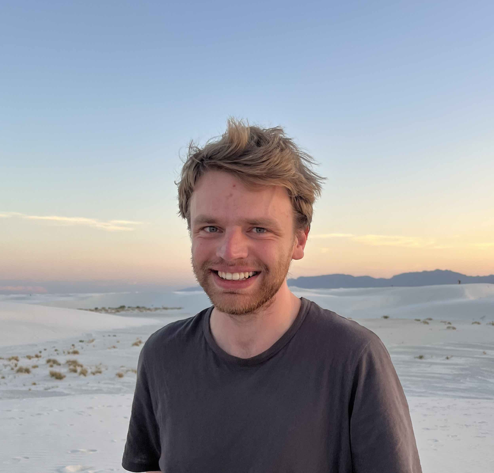
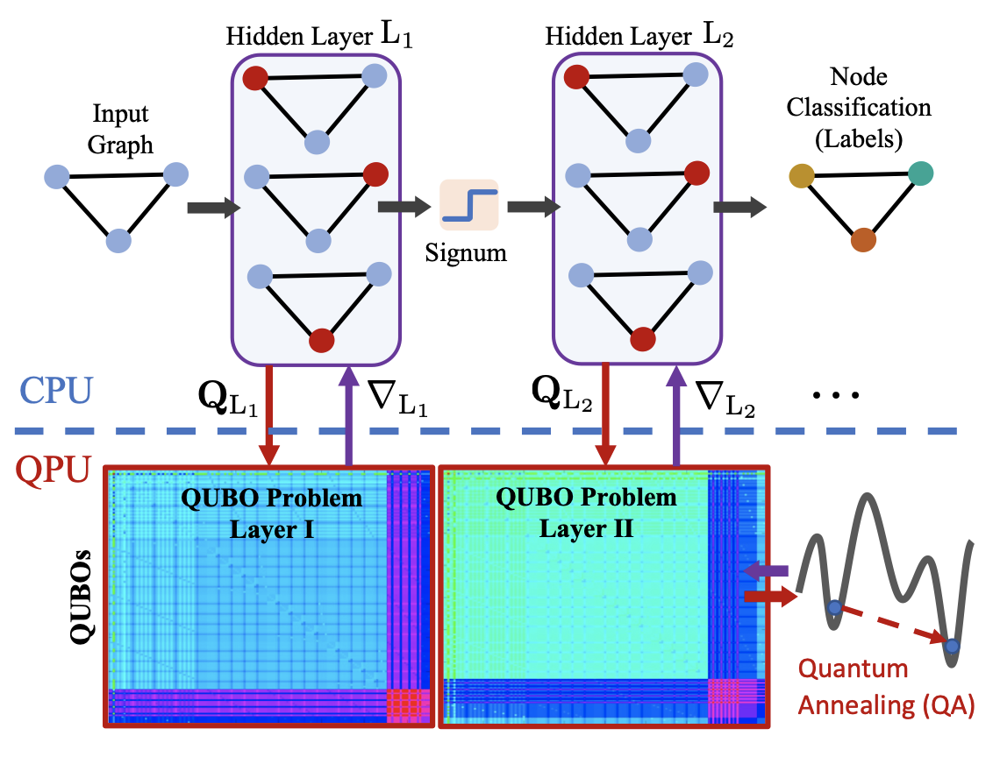
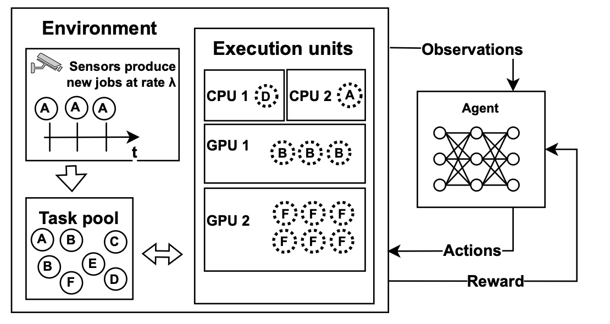
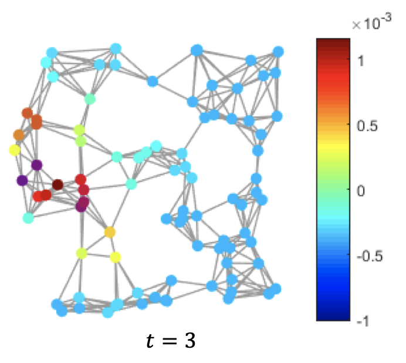
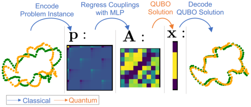
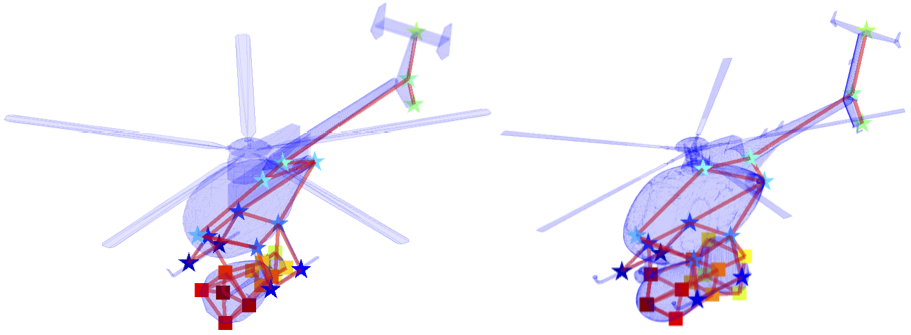

|
Maximilian Krahn
I am a Ph.D. student at Aalto University in Dr. Vikas Gargs lab
My research interests are in topological deep learning and quantum computer vision. Feel free to drop me an email if you are interested.
Email /
Scholar /
Github /
X
|

|
Experience
- [06/2024 - 08/2024] Summer Quantum Student at Los Alamos National Laboratory, USA.
- [08/2023 - 01/2024] Visiting Student Researcher at KAUST, Saudi Arabia in Prof. Peter Wonka's lab working on 3D neural representation.
- [10/2022 - 12/2022] Research Assistant at Aalto University, Finland in Vesa Hirvisalo's lab working on Reinforcement Learning methods.
- [06/2022 - 08/2022] Summer Research Intern at École Polytechnique in Maks Ovsjanikovs lab working on graph diffusion methods.
- [07/2021 - 09/2022] Research Assistant at MPI-Inf in Dr. Vladislav Golyaniks group working on Quantum Computer Vision algorithms.
|
|

|
Projected Stochastic Gradient Descent with Quantum Annealed Binary Gradients
Krahn M
Sasdelli M.,
Yang F,
Golyanik V.,
Kannala J.,
Chin T.,
Birdal T
(BMVC), 2024
project page
A quanutum annealer deployable optimiser for binary neural networks
|
|

|
Scheduling conditional task graphs with deep reinforcement learning
Debner A,
Krahn M
Hirvisalo V.,
NLDL, 2024
code
A reinforcement learning based scheduler for conditional task graphs
|
|

|
TIDE: Time Derivative Diffusion for Deep Learning on Graphs
Behmanesh M*,
Krahn M*
Ovsjanikov M.,
(* denotes shared first author) ICLM, 2023
code
A new graph neural network architecture based on time derivative diffusion for node classification
|
|

|
QuAnt: Quantum Annealing with Learnt Couplings
Benkner, M. S.,
Krahn M.,
Tretschk, E.,
Lähner, Z.,
Moeller, M. ,
Golyanik V.,
ICLR, 2023 as spotlight (top 20%)
project website
A deep learning framework to learn QUBO representations for computer vision problems
|
|

|
Shifting our Awareness, Taking Back Tags: Temporal Changes in Computer Vision Services' Social Behaviorsr
Barlas P., Krahn M., Kleanthous S., Kyriakou K., Otterbacher J.
ICWSM, 2022
|
|
|
Convex Joint Graph Matching and Clustering via Semidefinite Relaxations
Krahn M,
Bernard F.,
Golyanik V.,
3DV, 2021
project page
A SDP formulation for joint graph matching and clustering
|
Academic Services
- Conference Reviewer
- CVPR: 2023, 2024
- ICCV: 2023
- NeurIPS: 2022, 2023
- ICWSM: 2021
|
|